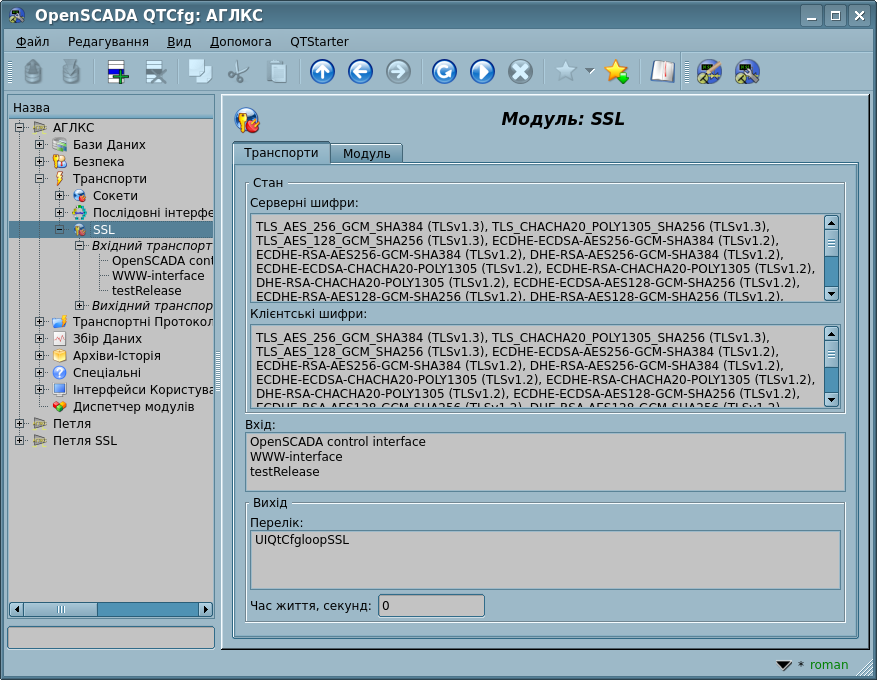

| Модуль |
Ім'я |
Версія |
Ліцензія |
Джерело |
Мови |
Платформи |
Тип |
Автор
|
| SSL |
SSL
|
5.1 |
GPL2 |
tr_SSL.so |
en,uk,ru,de |
x86,x86_64,ARM
|
Транспорт |
Роман Савоченко
|
| Опис
|
Надає транспорт, заснований на безпечному шарі сокетів. Використано OpenSSL та підтримуються SSL-TLS залежно від версії бібліотеки.
- Спонсорування, зовнішнього файлу сертифікатів на 0.3 ЛД[!]: Вінницька Птахофабрика
|
Модуль надає до програми підтримку транспортів, заснованих на Шарі Безпечних Сокетів (SSL). У основі модуля лежить бібліотека OpenSSL. Підтримуються вхідні та вихідні транспортні протоколи SSL-TLS, загальний перелік яких залежить від їх доступності у бібліотеці OpenSSL та обирається найбільш актуальний і безпечний.
Додати нові вхідні та вихідні безпечні сокети можна за посередництвом конфігурації транспортної підсистеми у будь якому конфігураторі OpenSCADA.
На нових SSL-версіях вкладка "Транспорти" модуля доповнена інформацією щодо загальних-контекстних шифрів окремо для вхідної-серверної частини і вихідної-клієнтської, дивіться рисунок 1.
 Рис.1. Вкладка "Транспорти" із SSL шифрами.
1 Вхідні транспорти
Сконфігурований та запущений вхідний транспорт відкриває серверний SSL-сокет для очікування підключень клієнтів, крім ініціативного підключення. SSL-сокет є багато-потоковим, тобто при підключенні клієнту створюється клієнтське SSL-з'єднання та новий потік, у якому здійснюється обслуговування клієнту. Серверний SSL-сокет на цей час переходить до очікування запитів від нового клієнту. Таким чином досягається паралельне обслуговування клієнтів.
Кожний вхідний транспорт пов'язується з одним або декількома з доступних транспортних протоколів, якому передаються вхідні повідомлення. Разом з транспортним протоколом підтримується механізм об'єднання шматків розрізнених при передачі запитів.
Прочитати про механізм пасивного збору та ініціативні підключення ви можете у відповідній частині документу "Збір даних в OpenSCADA".
Рис.2. Загальні діалоги конфігурації вхідного SSL-транспорту.
За допомогою основного діалогу можна встановити:
- Стан транспорту, а саме: статус, "Підключення", ім'я сховища (яке містить конфігурацію), перелік з інформацією про поточні підключення і підтримувані шифри.
- Ідентифікатор, ім'я та опис транспорту.
- Адреса транспорту у форматі "{addr}[:{port}[,{port2}[,{portN}]][:{mode}[:{IDmess}]]]" де:
- addr — адреса для відкриття SSL, має бути однією з адрес хосту. Порожня або "*" адреса відкриває SSL на всіх інтерфейсах. Допускаються як символьне, так й IPv4 "127.0.0.1" або IPv6 "[::1]" представлення адреси.
- port, port2, portN — мережеві порти на яких послідовно відкривається SSL (при зайнятості перших), можливе вказання символьного ім'я порту відповідно до /etc/services.
- mode – режим оперування:
- 0(типовий) — звичайне підключення.
- 2 — ініціативне підключення. Вмикає режим ініціативи підключення цього вхідного транспорту до віддаленого хосту (адреса замість локального) та перехід у режим очікування запитів від цього хосту. Значення "Keep alive час очікування" використовується як таймаут перепідключення даного транспорту за відсутності активності, з метою відновлення можливо втраченого підключення.
- IDmess — ідентифікуюче повідомлення ініціативного підключення — режим 2.
- Обрання транспортних протоколів.
- Стан "Підключення", у який переводити транспорт при завантажені.
За допомогою додаткового діалогу можна встановити:
- Пріоритет задач транспорту.
- Розмір системного вхідного буферу сокетів в кілобайтах. Встановити в 0 для зняття користувацького розміру. Актуальний розмір можете бачити у статусі.
- Максимальний розмір сегмента (MSS) в байтах для обмеження розміру пакетів що відсилаються (сегментів TCP) на поганих каналах зв'язку. Встановити в 0 для зняття користувацького обмеження розміру. Актуальний розмір можете бачити у статусі.
- PEM-файл сертифікатів та приватного ключа; або сертифікати, приватний ключ SSL безпосередньо та пароль приватного ключа SSL.
 Приховано у підключеному стані.
Приховано у підключеному стані.- Відстежується у 60 секунд щодо оновлення, відтак перепідключення транспорту для актуалізації.
- [!INIT] Максимальна кількість клієнтів, Максимальна кількість клієнтів за хостами та Розмір вхідного буферу.
- [!INIT] Keep alive запитів. Закриття підключення після вказаної кількості запитів. Нульове значення для вимкнення — не закривається ніколи.
- Keep alive час очікування, секунд. Закриття підключення після відсутності запитів протягом вказаного часу. Нульове значення для вимкнення — не закривається ніколи.
- Вимикати цю функцію не рекомендується оскільки властивість мережі TCP/IP не гарантує повідомлення серверу про відключення з'єднання, скажемо у випадку пропадання живлення на клієнті. У результаті чого можуть назавжди залишатися відкриті клієнтські підключення, а за досягненням ліміту сервер припинить приймати нові!
- [INIT|ASSOC] Таймаути, спроби ініціативного підключення і асоційованих вихідних транспортів, порожнє для типового і поділене '||'. Формат таймаутів і спроб відповідає вихідному транспорту.
- Специфічні до протоколу користувацькі параметри.
- Скинути усі додаткові параметри до типових значень та очистити специфічні до протоколу користувацькі параметри.
2 Вихідні транспорти
Сконфігурований та запущений вихідний транспорт відкриває з'єднання з вказаним сервером. При розриві з'єднання вихідний транспорт зупиняється. Для відновлення з'єднання транспорт треба знову запустити, що всі протоколи роблять автоматично.
Транспорт підтримує пряме визначення декількох адрес серверу та опрацювання всіх IP-адрес у які резолвиться символьна адреса, що дозволяє будувати вертикальне резервування безпосередньо транспортом, який буде автоматично підключатися до першого доступного серверу.
Рис.3. Загальні діалоги конфігурації вихідного SSL-транспорту.
За допомогою основного діалогу можна встановити:
- Стан транспорту, а саме: статус, "Підключення" та ім'я сховища, яке містить конфігурацію, і підтримувані шифри.
- Ідентифікатор, ім'я та опис транспорту.
- Адреса транспорту у форматі "{addr}[,{addrN}]:{port}", де:
- addr — адреса до якої здійснюється підключення. Допускається як символьне так й IPv4 "127.0.0.1" або IPv6 "[::1]" представлення адреси.
- port — мережевий порт до якого здійснюється підключення. Можливе вказання символьного ім'я порту відповідно до /etc/services.
За допомогою додаткового діалогу можна встановити:
- PEM-файл сертифікатів та приватного ключа; або сертифікати, приватний ключ SSL безпосередньо та пароль приватного ключа SSL.
- Приховано у підключеному стані.
- Інтервали часу підключення у форматі "{conn}:{next}", де:
- conn — максимальний час очікування відповіді з'єднання, у секундах;
- next — максимальний час очікування продовження відповіді, у секундах.
- Може бути пріоритетно визначено другим глобальним аргументом поля адреси, на кшталт "localhost:123||5:1".
- Спроб запиту транспортом та протоколом, для повних запитів.
- Може бути пріоритетно визначено третім глобальним аргументом поля адреси, на кшталт "localhost:123||5:1||3".
- Максимальний розмір сегмента (MSS) в байтах для обмеження розміру пакетів що відсилаються (сегментів TCP) на поганих каналах зв'язку. Встановити в 0 для зняття користувацького обмеження розміру. Актуальний розмір можете бачити у статусі.
- Специфічні до протоколу користувацькі параметри.
- Скинути усі додаткові параметри до типових значень та очистити специфічні до протоколу користувацькі параметри.
3 Сертифікати та ключі
Для повноцінного функціювання модуля необхідні сертифікати і приватні ключі. У випадку з вхідним SSL-транспортом (сервером) вони обов'язкові. У випадку з вихідним SSL-транспортом вони можуть і не встановлюватися, хоча їх використання бажане.
Простішою конфігурацією сертифікату є само-підписаний сертифікат та приватний ключ. Нижче описано процедуру їх створення за допомогою утиліти openssl:
# Генерація секретного ключа
openssl genrsa -out ./key.pem -des3 -rand /var/log/messages 2048
# Генерація само-підписаного сертифікату
openssl req -x509 -new -key ./key.pem -out ./selfcert.pem -days 365
Далі вміст файлів "selfcert.pem" та "key.pem" копіюються до текстового поля сертифікату та ключа. Пароль приватного ключа встановлюється у відповідному полі.

{kind=link}
{kind=link}
{kind=link}